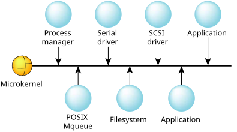

One of the principal advantages of QNX OS is that it's scalable.
By scalable
I mean that it can be tailored to work
on tiny embedded boxes with tight memory constraints, right up to large networks
of multiprocessor SMP boxes with almost unlimited memory.
QNX OS achieves its scalability by making each service-providing component modular. This way, you can include only the components you need in the final system. By using threads in the design, you'll also help to make it scalable to SMP systems (we'll see some more uses for threads in this chapter).
This is the philosophy that was used during the initial design of the QNX family of operating systems and has been carried through to this day. The key is a small microkernel architecture, with modules that would traditionally be incorporated into a monolithic kernel as optional components.

You, the system architect, decide which modules you want. Do you need a filesystem in your project? If so, then add one. If you don't need one, then don't bother including one. Do you need a serial port driver? Whether the answer is yes or no, this doesn't affect (nor is it affected by) your previous decision about the filesystem.
At runtime, you can decide which system components are
included in the running system.
You can dynamically remove components from
a live system and reinstall them, or others, at
some other time.
Is there anything special about these drivers
?
Nope, they're just regular, user-level programs that
happen to perform a specific job with the hardware.
In fact, we'll see how to write them in the Resource Managers chapter.
The key to accomplishing this is message passing.
Instead of having the OS modules bound directly into
the kernel, and having some kind of special
arrangement with the kernel, under QNX OS the modules communicate
via message passing among themselves.
The kernel is basically
responsible only for thread-level services (e.g., scheduling).
In fact, message passing isn't used just for this installation
and deinstallation trick—it's the fundamental
building block for almost all other services (for example, memory allocation
is performed by a message to the process manager).
Of course, some services are provided by direct kernel calls.
Consider opening a file and writing a block of data to it. This is accomplished by a number of messages sent from the application to an installable component of QNX OS called the filesystem. The message tells the filesystem to open a file, and then another message tells it to write some data (and contains that data). Don't worry though—the QNX OS operating system performs message passing very quickly.